Hi, my name is Annie Eng! I'm a Sophomore at Carnegie Mellon University studying Electrical
and Computer Engineering. I currently have experience with Python. I am enthusiastic about
learning new things, right now I'm trying to learn a new piece on the piano called Liebstraum - Love dream
by Franz Liszt.
I'm passionate about increasing diversity and inclusion for women in STEM. I was one of the
only females in my computer science and physics class in high school. But that changed with
one of my first experiences in STEM by being a research intern at New York University, which along
the way solidified my interest in engineering. Here's my research
I presented at the colloquium.
In my free time, I love to draw anime and go on Reddit to look at memes.
Here is a progression of a drawing I created that I'm proud of:
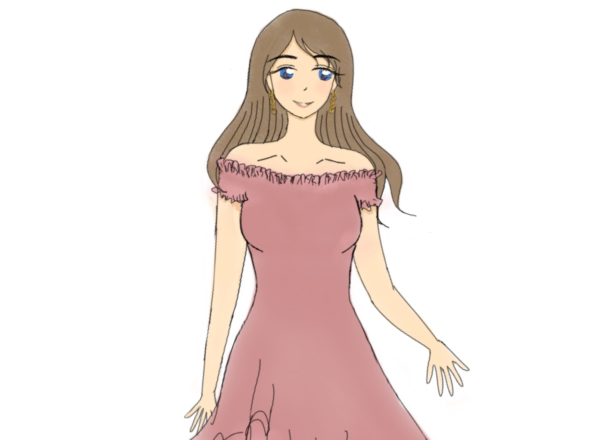
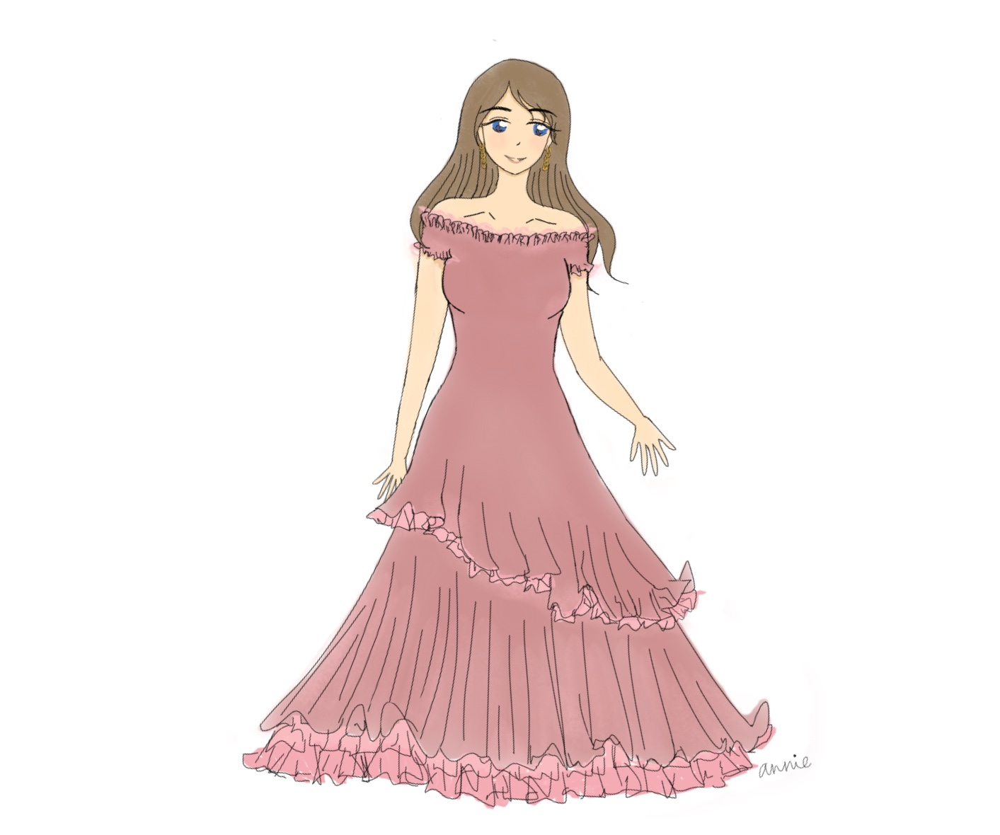
🌸Projects🌸
Application of Beauty
One of the first independent projects I made with some guidance is
Application of Beauty. Created using Python and Computer Vision, I wanted
my term project in my 15-112 class to showcase something I like: makeup. I created
geometric shapes in openCV to display where to apply the beauty product, made
dictionaries containing color pigments(gbr) to match different skin tones of users,
and created a finite state machine to alternate between makeup features. I added
some extra features for the user to modify such as a color opacity scale and created
an error prevention button to stop spamming the application. Here's a link
to show how to use the application from beginning to end. I included some
photos to show my UI, layout of how I wanted my program to work, and a testrun
of one of the skin tone features.
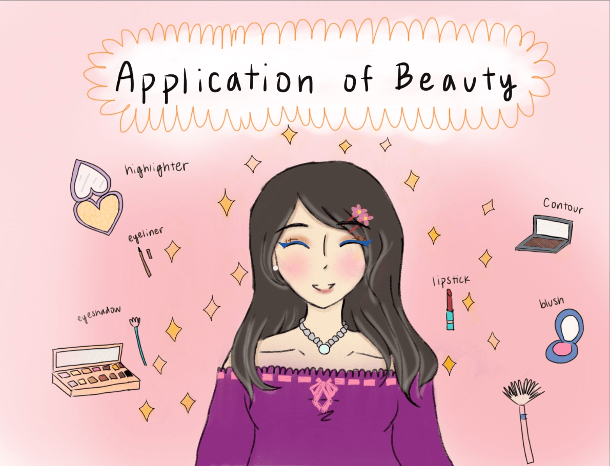
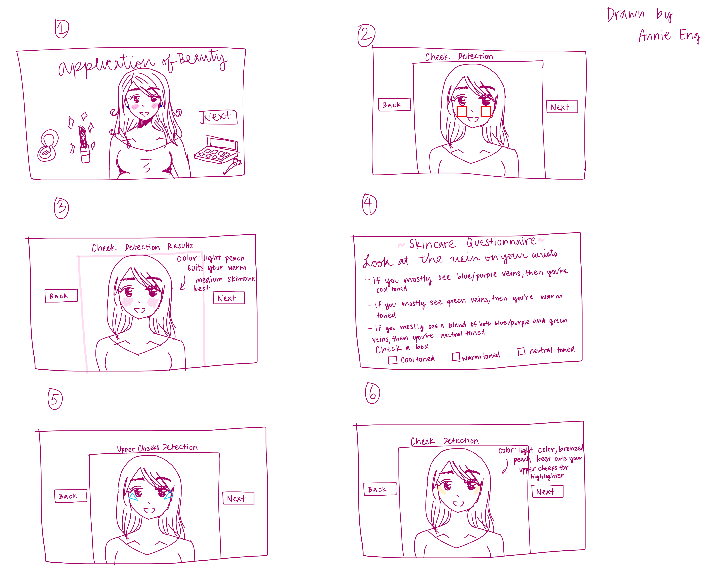
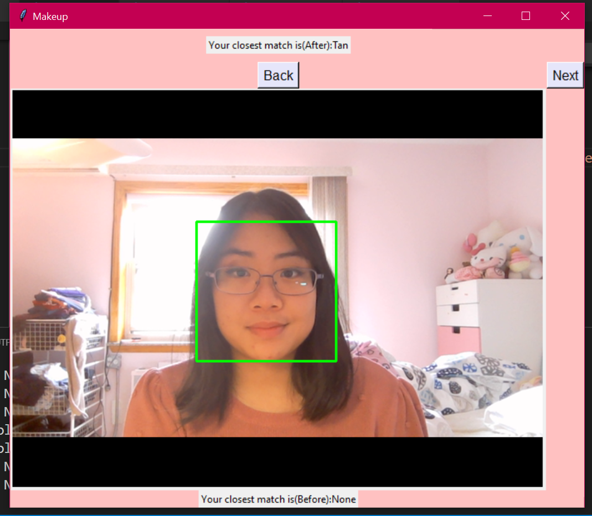
Pin Baller
A group project my friends and I made together in our Spring semester
of freshman year was called 'Pinballer' for a hardware hackathon called
Build18. Since we were freshmen, we didn't have a lot of experience with
hardware equipment but we tried out best with the knowledge we learned
from our electrical engineering and programming classes. We had a week
to brainstorm and create our idea from the equipment we were provided with.
We made a programming pinball game with added physics features.
For the hardware aspect, we connected an Arduino board with an accelerometer
to detect hand motion so the game can sense movement to score the ball.
There was some malfunctions with the equipment since they were fragile,
but we adapted to what we had and finished on time.
 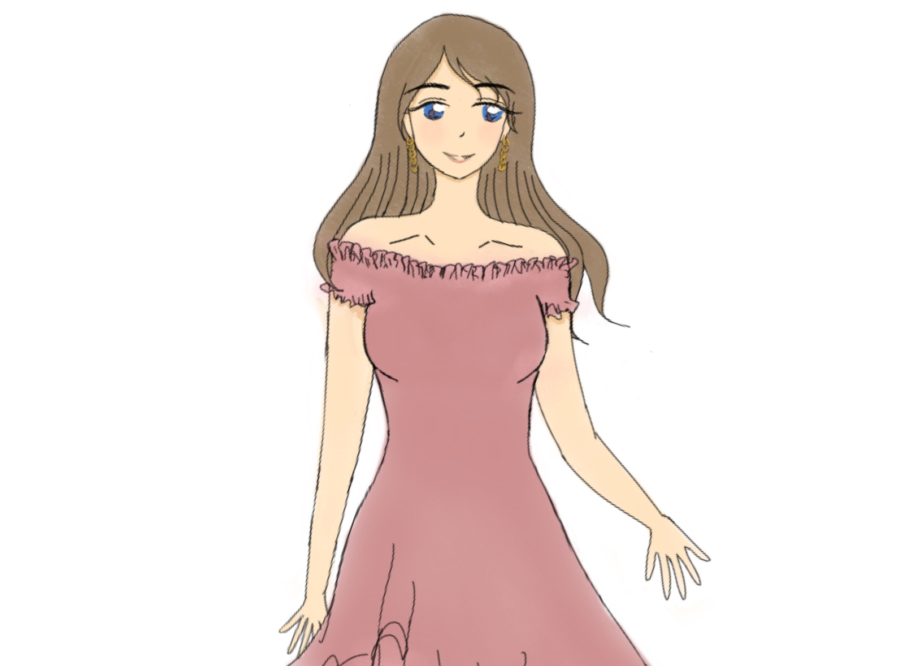
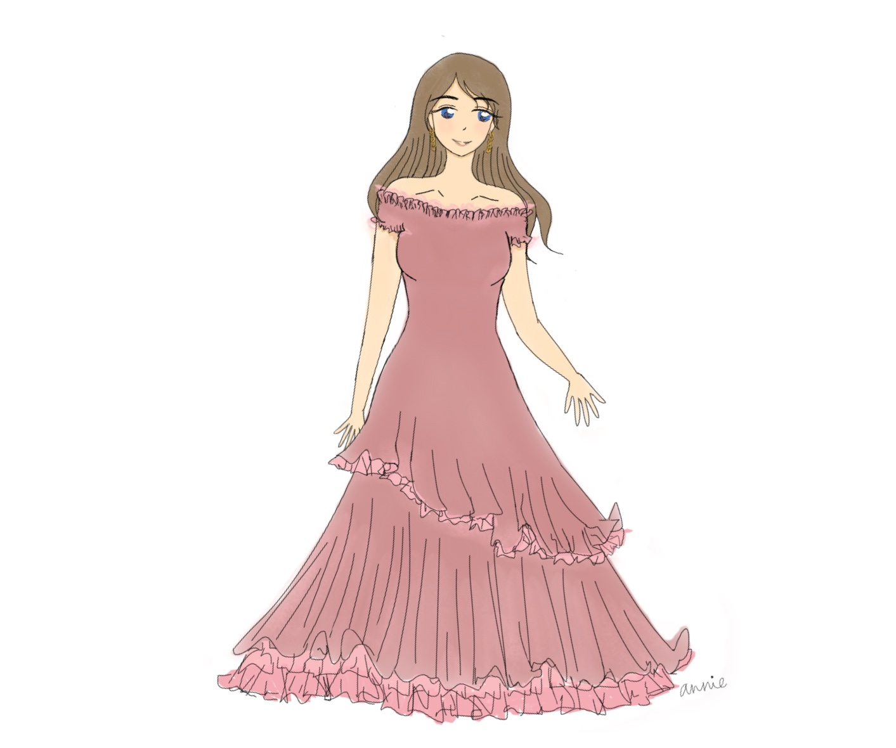
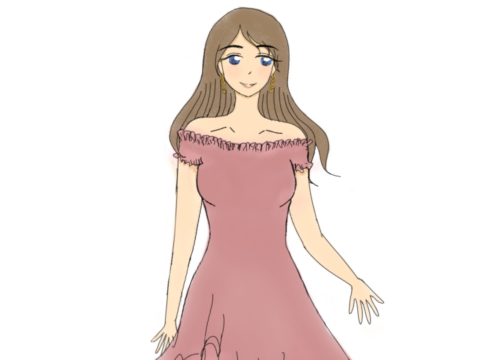
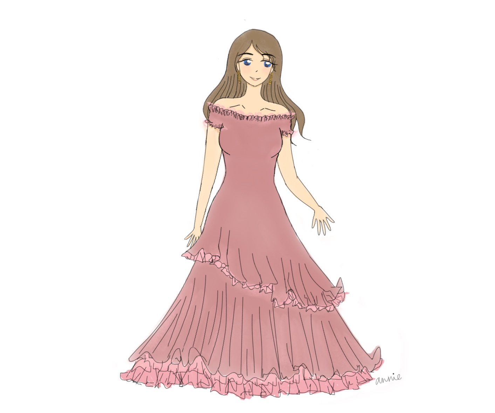
 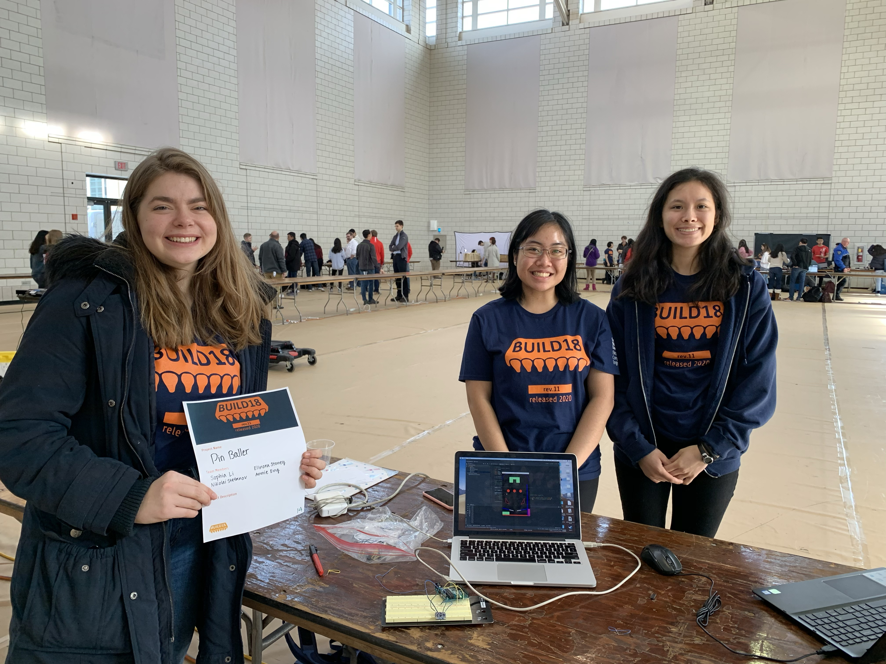
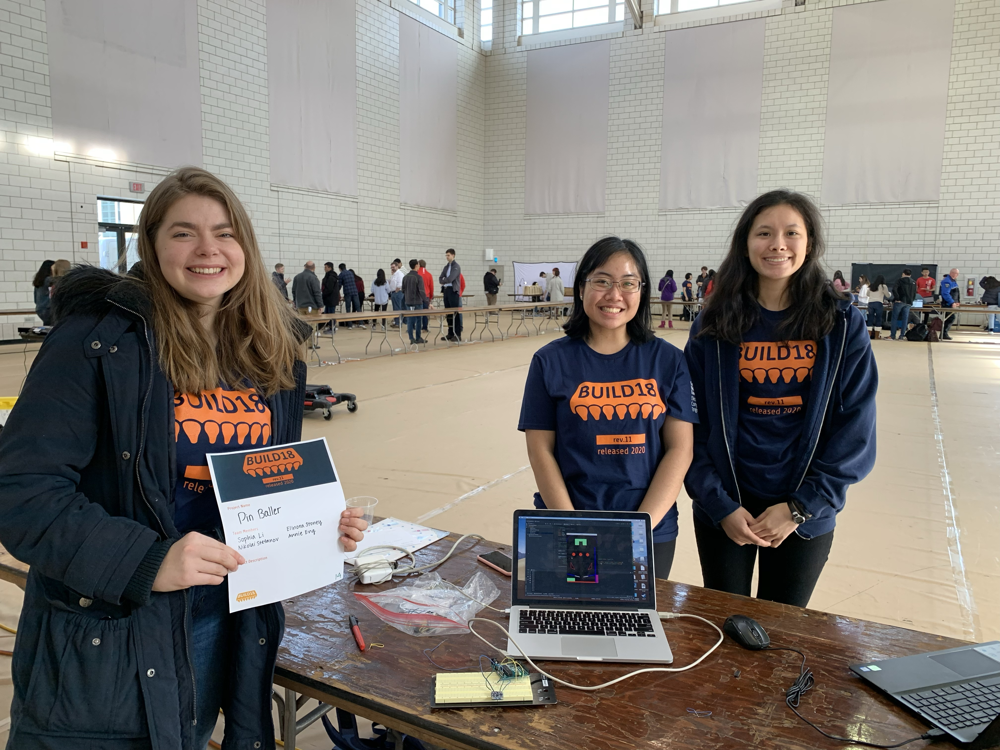